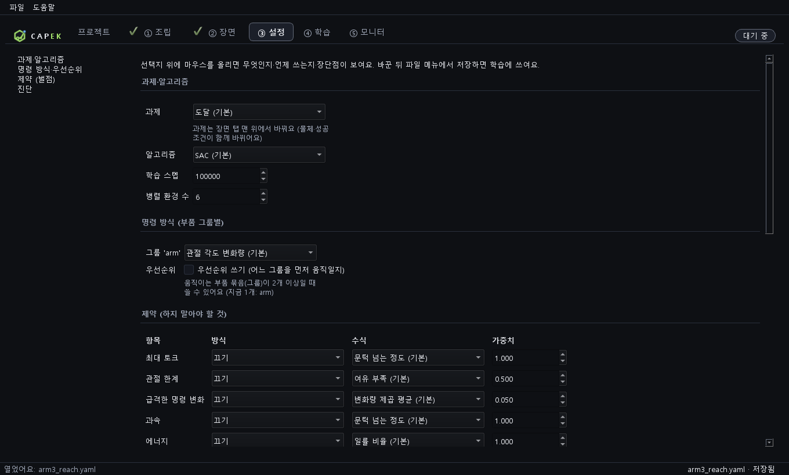
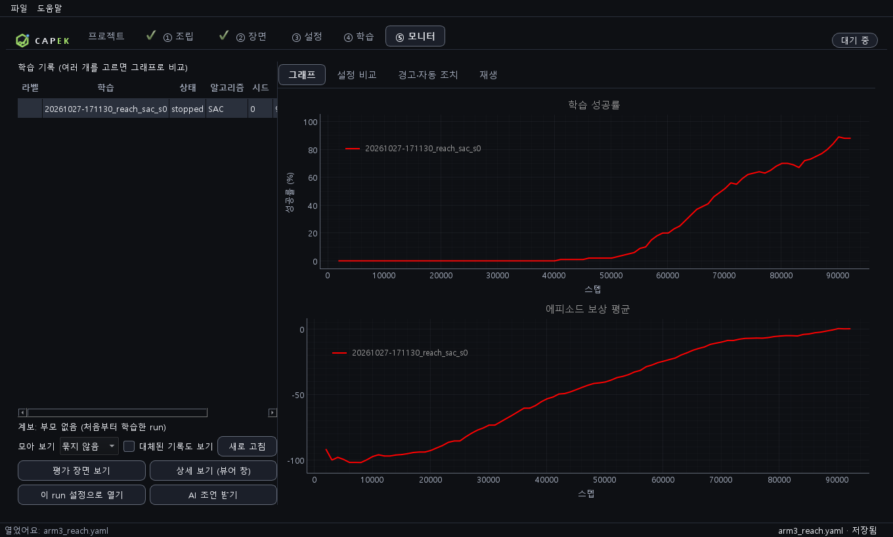

로봇 학습, 이제 앱 하나로 해 보세요
모델 파일 쓰기, 학습 코드 짜기, 곡선 따로 띄우기, 기록 뒤지기… 따로 하던 일을 한곳에 모았어요.
코드 없이 조립해요
링크·관절·바퀴·다리·그리퍼를 카드로 이어 붙여요. 3D 화면에서 바로 확인하고, 잘못 붙이면 이유를 알려 줘요.
버튼 하나로 학습해요
시작을 누르면 강화학습이 돌아요. 진행 패널과 곡선, 환경 미리보기가 실시간으로 움직이고, 창을 닫아도 학습은 계속돼요.
기록이 쌓이고 비교돼요
모든 학습이 내 PC에 기록으로 남아요. 모니터에서 곡선을 겹쳐 보고, 설정이 어디가 달라졌는지까지 확인해요.
직접 짜고 뒤지던 일을 버튼으로
자주 쓰는 화면

🏠 프로젝트
- 앱을 열면 가장 먼저 보이는 첫 화면
- 설정 목록(내 설정·프리셋)에서 골라 바로 열기
- 최근 학습을 두 번 누르면 모니터에서 열기
- 받침대만 있는 새 조립으로 시작

🧩 조립
- 붙일 수 있는 부품이 카드로 보이고, 누르면 바로 붙어요
- 고른 부품은 점선 상자로, 작업 부위와 목표는 이름표로 표시
- 크기·질량·관절 한계·토크를 오른쪽에서 조절
- 조립 검사가 학습 가능 여부를 바로 알려 줘요

🎯 장면
- 팔 뻗기·이동·균형·걷기·집어서 옮기기 중에서 과제 선택
- 목표가 나올 범위를 3D 상자로 정하기
- 성공 거리·최대 스텝 같은 성공 조건 조절

⚙ 설정
- 알고리즘(SAC·PPO·TD3)과 학습 스텝, 병렬 환경 수
- 보상과 제약(토크·관절 한계 등)을 항목별로
- 항목마다 툴팁으로 뜻을 설명

📈 학습
- 병렬 환경을 칸으로 보는 미리보기(켜고 끌 수 있어요)
- 스텝·처리량·남은 시간·경고를 한곳에
- 성공률과 보상 곡선이 실시간으로
- 중지하면 두뇌와 기록을 저장하고 멈춰요

🗂 모니터
- 학습 기록을 모아 곡선을 겹쳐 비교
- 설정 비교, 경고·자동 조치 이력, 3D 재생 탭
- "이 run 설정으로 열기"로 같은 조건에서 다시 시작
필요한 건 다 들어 있어요
만들기 조립 · 과제
부품 5종 이상
링크, 관절 모듈, 바퀴, 다리, 그리퍼, 몸체 등. 부품마다 크기·질량·역할을 정해요.
과제 5가지
팔 뻗기, 이동, 균형, 걷기, 집어서 옮기기. 목표 범위와 성공 조건을 직접 정해요.
조립 검사
끊긴 부품, 빠진 역할 같은 문제를 학습 전에 알려 줘요.
학습하기 학습 · 진단
알고리즘 3종
SAC·PPO·TD3. 병렬 환경으로 CPU에서 돌려요.
이어서 학습
끝난 학습의 두뇌에서 이어 학습해요. 구조가 다르면 이유를 알려 줘요.
자동 진단
학습이 막히면 원인 후보를 알려 주고, 안전한 것은 스스로 고쳐요.
끄고 켜도 계속
창을 닫아도 학습은 계속되고, 다시 열면 이어서 보여 줘요.
확인하기 모니터 · 재생
기록 비교
여러 학습을 겹쳐 보고 설정이 어디가 다른지, 조상 run이 무엇인지 확인해요.
3D 재생
끝난 학습을 3D로 다시 봐요.
내 PC에 저장
모든 기록은 문서\CAPEK에 저장돼요. 제거해도 남아요.
"왜 학습이 안 되죠?"를 AI에게 물어보세요
모니터에서 기록을 고르고 AI 조언 받기를 누르면, 분석가 2명이 따로 기록을 보고 의견이 같은 것만 설정 제안으로 보여 줘요.
안심하고 쓰세요
내 PC 안에서
조립, 학습, 재생은 모두 이 PC에서 돌아요. 인터넷은 AI 조언을 쓸 때만 써요.
보내는 것은 요약만
AI 조언을 쓸 때 학습 설정과 지표 요약만 Anthropic으로 가요. 파일 경로와 API 키는 보내지 않아요.
자동으로 하지 않아요
조언은 참고용이에요. 적용도, 학습 시작도 내가 눌러야만 돼요.
설치파일 하나로 끝나요
- 내려받기위의 다운로드 버튼으로
CAPEK-Setup.exe를 받아요. - 설치더블클릭해서 설치해요. 관리자 권한은 필요 없어요.
- "알 수 없는 게시자" 경고가 뜨면 추가 정보 → 실행
- 열기시작 메뉴에서 CAPEK을 열어요. 처음 화면은 프로젝트예요.
| 필요한 것 | Windows 10 또는 11, 64비트 |
|---|---|
| 권장 | 메모리 8 GB 이상, 디스크 약 1 GB |
| GPU | 필요 없어요. 3D가 안 되는 PC는 소프트웨어 방식으로 자동 전환해요. |
제거하려면 설정 → 앱에서 CAPEK을 지워요. 학습 기록(문서\CAPEK)은 남아요. 코드 서명이 아직 없어 첫 실행에 경고가 뜰 수 있고, 일부 백신이 새 프로그램을 의심할 수 있어요.
세 단계면 첫 학습이 돌아요
- 조립프로젝트에서 arm3_reach를 열어요. 조립 탭에서 부품을 바꾸거나 카드를 눌러 붙여요.
- 학습학습 탭에서 학습 시작을 눌러요. 곡선과 환경 미리보기가 움직이면 돼요.
- 확인끝나면 모니터 탭에서 기록을 고르고, 재생 탭에서 3D로 결과를 봐요.
잘 안 될 때
설치할 때 "알 수 없는 게시자" 경고가 떠요
코드 서명이 아직 없어서 나오는 정상 경고예요. 추가 정보 → 실행을 누르면 설치돼요. "앱 제어 정책이 차단했다"는 창이 뜨면 이슈에 화면 문구를 남겨 주세요.
3D 화면이 안 나와요
GPU가 없거나 드라이버 문제일 때 소프트웨어 방식으로 자동 전환해요. 그래도 안 나오면 문서\CAPEK\logs\gui.log를 이슈에 붙여 주세요. 학습은 3D 없이도 돌아요.
학습이 너무 느려요
학습은 CPU로 해요. 다른 프로그램이 CPU를 많이 쓰면 몇 배 느려질 수 있어요. 설정 탭에서 병렬 환경 수를 줄이거나 학습 스텝을 줄여 보세요.
기록은 어디에 저장되나요
문서\CAPEK 폴더예요. runs\(학습 기록과 두뇌), my_configs\(내가 저장한 설정), logs\(로그). 폴더를 바꾸려면 환경변수 CAPEK_DATA_DIR을 설정해요.
AI 조언 키는 어떻게 넣나요
모니터에서 AI 조언 받기를 눌러 안내를 읽고 동의한 뒤 키를 입력해요. 키는 Windows 자격 증명 관리자에 저장되고 파일에는 남지 않아요.
예전 버전 받기
- 목록을 불러오는 중…
로봇 학습, 오늘부터 한 앱에서
개인·교육·연구 목적이라면 무료예요.